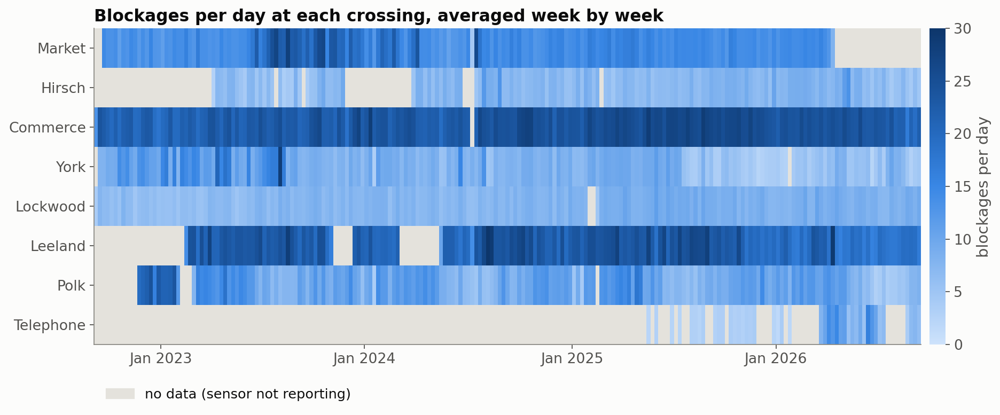
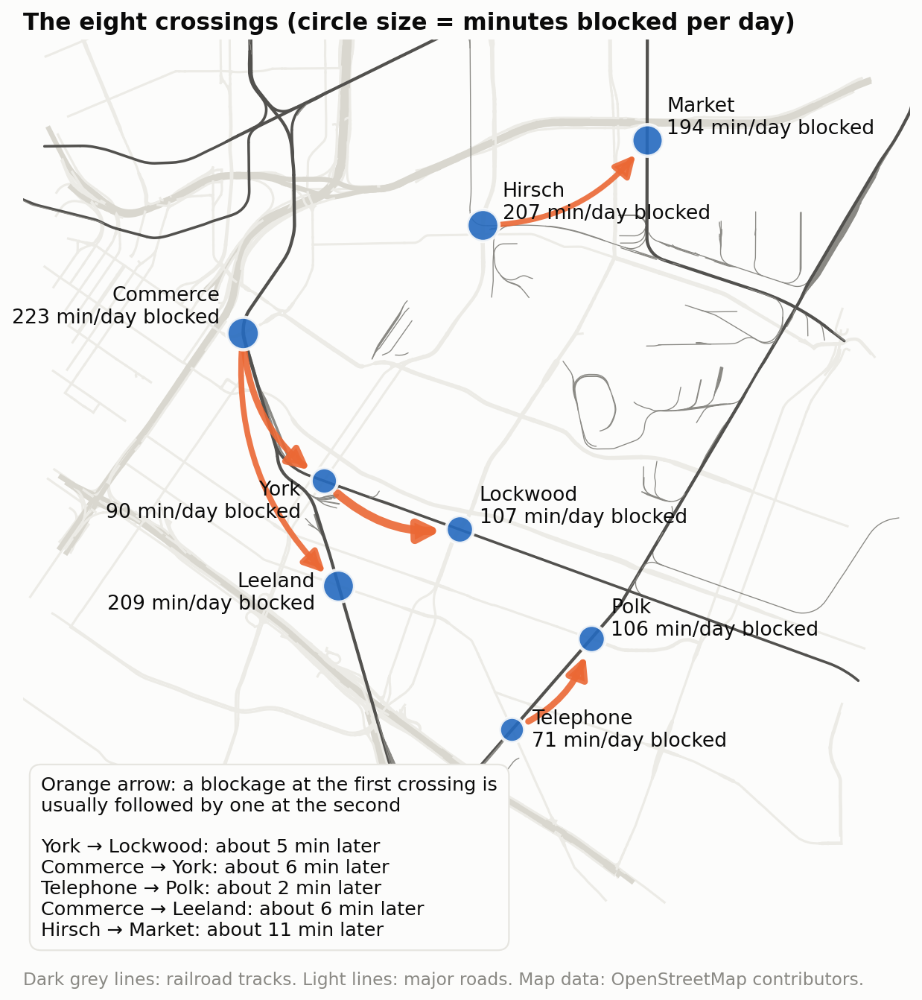
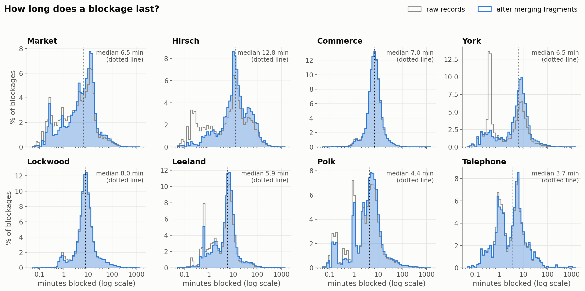
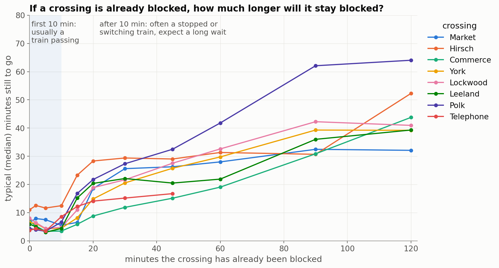
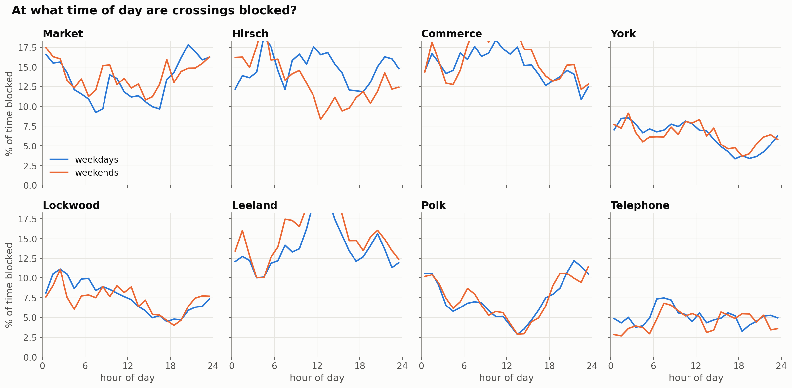
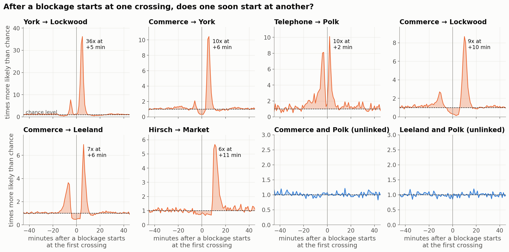
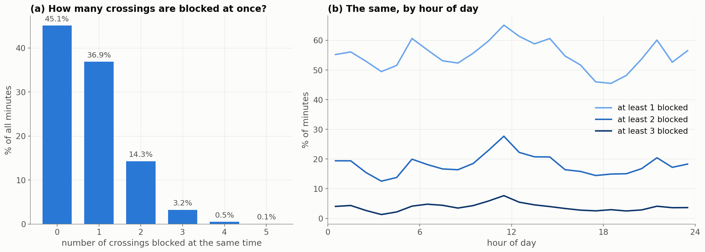
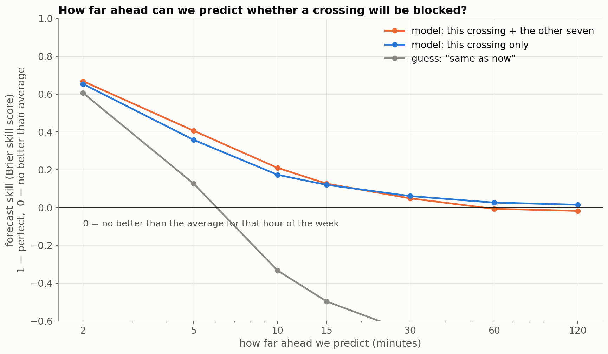

<title>East Downtown Crossing Blockages</title>
<link rel="preconnect" href="https://fonts.googleapis.com">
<link rel="preconnect" href="https://fonts.gstatic.com" crossorigin>
<link rel="stylesheet" href="https://fonts.googleapis.com/css2?family=IBM+Plex+Mono:wght@400;500&family=IBM+Plex+Sans+Condensed:wght@500;600;700&family=Source+Serif+4:ital,opsz,wght@0,8..60,400;0,8..60,600;1,8..60,400&display=swap">
<style>
:root {
  --ground: #f5f6f3;
  --surface: #ffffff;
  --plate: #fcfcfb;
  --ink: #15181b;
  --ink-2: #4a5057;
  --muted: #737a82;
  --rule: #d9dcd6;
  --accent: #b9471a;
  --accent-soft: #fbe9df;
  --blue: #2466b8;
  --display: "IBM Plex Sans Condensed", "Arial Narrow", "Helvetica Neue", Arial, sans-serif;
  --body: "Source Serif 4", Georgia, "Times New Roman", serif;
  --mono: "IBM Plex Mono", ui-monospace, "SFMono-Regular", Menlo, Consolas, monospace;
}
@media (prefers-color-scheme: dark) {
  :root:not([data-theme="light"]) {
    color-scheme: dark;
    --ground: #121416;
    --surface: #1a1d20;
    --plate: #fcfcfb;
    --ink: #e8eae6;
    --ink-2: #b5bac0;
    --muted: #8d949b;
    --rule: #2d3236;
    --accent: #f08457;
    --accent-soft: #3a2419;
    --blue: #6fa6ec;
  }
}
:root[data-theme="dark"] {
  color-scheme: dark;
  --ground: #121416;
  --surface: #1a1d20;
  --plate: #fcfcfb;
  --ink: #e8eae6;
  --ink-2: #b5bac0;
  --muted: #8d949b;
  --rule: #2d3236;
  --accent: #f08457;
  --accent-soft: #3a2419;
  --blue: #6fa6ec;
}
body {
  background: var(--ground);
  color: var(--ink);
  font-family: var(--body);
  font-size: 17px;
  line-height: 1.6;
  padding-inline: 20px;
  padding-block: 48px 96px;
}
main { max-width: 1040px; margin: 0 auto; }
.col { max-width: 700px; margin-inline: auto; }
header.col { display: grid; gap: 14px; margin-bottom: 40px; }
.eyebrow {
  font-family: var(--mono); font-size: 12px; letter-spacing: 0.06em; text-transform: uppercase;
  color: var(--muted);
}
.eyebrow b { color: var(--accent); font-weight: 500; }
h1 {
  font-family: var(--display); font-weight: 700; font-size: clamp(32px, 5vw, 46px); line-height: 1.08;
  letter-spacing: -0.01em; margin: 0; text-wrap: balance;
}
.dek { font-size: 19px; color: var(--ink-2); margin: 0; }
h2 {
  font-family: var(--display); font-weight: 600; font-size: 26px; line-height: 1.2; margin: 64px 0 12px;
  text-wrap: balance; padding-top: 14px; border-top: 2px solid var(--ink);
}
h3 { font-family: var(--display); font-weight: 600; font-size: 19px; margin: 32px 0 6px; }
p { margin: 0 0 16px; }
.col > ul, .col > ol { padding-left: 22px; margin: 0 0 18px; }
li { margin-bottom: 8px; }
code, .mono { font-family: var(--mono); font-size: 0.84em; }
a { color: var(--blue); text-underline-offset: 2px; }
a:focus-visible { outline: 2px solid var(--accent); outline-offset: 2px; }
.num { font-family: var(--mono); font-size: 0.9em; font-variant-numeric: tabular-nums; }

.findings {
  background: var(--surface); border: 1px solid var(--rule); border-radius: 6px;
  padding: 22px 26px 8px; margin: 8px auto 0;
}
.findings h2 { border: 0; margin: 0 0 10px; padding: 0; font-size: 20px; }
.findings ol { padding-left: 20px; margin: 0 0 12px; }
.findings li { margin-bottom: 12px; }

figure { margin: 28px auto 32px; }
figure.wide { max-width: 1040px; }
figure.mid { max-width: 820px; }
.plate {
  background: var(--plate); border: 1px solid var(--rule); border-radius: 4px; padding: 10px;
  overflow-x: auto;
}
.plate img { display: block; width: 100%; height: auto; min-width: 560px; }
figure.mid .plate img { min-width: 0; }
figcaption {
  max-width: 700px; margin: 10px auto 0; font-size: 14.5px; line-height: 1.5; color: var(--ink-2);
}
figcaption .tag { font-family: var(--mono); font-size: 12px; color: var(--accent); margin-right: 6px; }

.table-wrap { overflow-x: auto; margin: 18px auto 26px; max-width: 860px; }
table { border-collapse: collapse; width: 100%; font-size: 14px; font-variant-numeric: tabular-nums; }
th, td { padding: 7px 10px; text-align: right; border-bottom: 1px solid var(--rule); white-space: nowrap; }
th { font-family: var(--display); font-weight: 600; color: var(--ink-2); font-size: 13.5px; border-bottom: 1.5px solid var(--ink-2); }
td:first-child, th:first-child, td.l, th.l { text-align: left; }
td.mono { font-family: var(--mono); font-size: 13px; }
tr.hl td { background: var(--accent-soft); }

.callout {
  border-left: 3px solid var(--accent); padding: 4px 0 4px 18px; margin: 22px 0; color: var(--ink);
}
.tasks { display: grid; grid-template-columns: repeat(auto-fit, minmax(240px, 1fr)); gap: 14px; margin: 18px auto 24px; max-width: 900px; }
.task { background: var(--surface); border: 1px solid var(--rule); border-radius: 6px; padding: 16px 18px; display: grid; gap: 6px; align-content: start; }
.task .q { font-family: var(--display); font-weight: 600; font-size: 17.5px; line-height: 1.25; }
.task .meta { font-family: var(--mono); font-size: 12px; color: var(--muted); }
.task p { font-size: 15px; margin: 0; }
.task.primary { border-color: var(--accent); }
.task.primary .meta { color: var(--accent); }
footer.col { margin-top: 72px; font-size: 14px; color: var(--muted); border-top: 1px solid var(--rule); padding-top: 16px; }
@media (max-width: 520px) {
  body { font-size: 16px; padding-inline: 16px; }
  .findings { padding: 18px 18px 4px; }
}
</style>

<main>
<header class="col">
  <div class="eyebrow">HFD_D2K <b>/</b> initial data report <b>/</b> 23 Sep 2026</div>
  <h1>Where the trains stop the traffic: eight crossings east of downtown Houston</h1>
  <p class="dek">We have four years of records showing when eight railroad crossings were blocked by trains and for how long. This report cleans the data, describes what it shows, and proposes what the forecasting part of the project should try to predict.</p>
</header>

<section class="col findings" aria-labelledby="summary">
  <h2 id="summary">Main findings</h2>
  <ol>
    <li>After cleaning, the data contain <span class="num">131,799</span> blockages between September 2022 and September 2026. The busiest crossing, Commerce St, is blocked for about <span class="num">223</span> minutes a day, or 15% of the time.</li>
    <li>Most blockages end within 5 to 10 minutes. A blockage that has already lasted 20 minutes will usually last another 10 to 30 minutes, and one that has lasted an hour, another 20 to 40. A simple rule for drivers follows: wait if the train just arrived, take another route if it has been there for 10 minutes.</li>
    <li>Blockages move along the tracks. In 56% of cases, a blockage at York St is followed by a blockage at Lockwood St 2 to 8 minutes later. So one crossing can give a few minutes of warning about the next one.</li>
    <li>We can predict whether a crossing will be blocked a few minutes ahead, but not much further. At 5 minutes ahead a model clearly beats the simple average. By 30 minutes ahead it barely does, and by an hour it does not.</li>
    <li>The sensors are not always reliable. Some crossings stop reporting for weeks, one sensor recorded fake blockages for four days, and some crossings change their traffic level suddenly. We need to handle these problems before building a forecasting model.</li>
  </ol>
</section>

<div class="col">
<h3 id="terms">Terms used in this report</h3>
<ul>
  <li>A <i>record</i> is one row of the original file. A <i>blockage</i> (or episode) is what remains after we join records that belong to the same train (see the next section).</li>
  <li><i>Median</i>: the middle value. Half of the blockages are shorter and half are longer. We use it instead of the mean because a few very long blockages would pull the mean up.</li>
  <li><i>Time-of-week average</i>: how often a crossing is blocked at a given hour on a given weekday, averaged over the training data. It is the simplest possible forecast and the baseline that every model must beat.</li>
</ul>

<h2 id="data">Cleaning the data</h2>
<p>Each row of the original file describes one blockage at one crossing. It gives the crossing's federal ID number and name, its latitude and longitude, the start date and time, and the duration in minutes. Every row repeats the coordinates, so we split the file into two tables: one row per crossing (<code>stations.csv</code>) and one row per blockage (<code>events.csv</code>). We found four problems.</p>
<ol>
  <li>Different time formats. Telephone Rd records times with seconds (<code>18:46:06</code>); the others record only hours and minutes. A parser that expects one format silently drops all 2,113 Telephone Rd rows.</li>
  <li>One train split into several records. Sometimes the sensor reports a train as two or more short records a few seconds apart. At York St, 47% of records are shorter than one minute. We joined any records separated by 2 minutes or less into one blockage, which reduces 153,022 records to 131,799 blockages. We also removed 119 exact duplicate rows and set 18 slightly negative durations to zero.</li>
  <li>Sensor outages. A busy crossing almost never goes a full day without a train. We treat any gap longer than 24 hours as "sensor not reporting" rather than "no trains". This finds 128 outages; the longest, at Hirsch Rd, lasts 121 days.</li>
  <li>Fake blockages. From 25 to 28 February 2025, the Hirsch Rd sensor recorded 1,243 blockages of about 40 seconds each, roughly 50 times its normal daily count. We flag any day with more than 3 times the usual count where most blockages are under a minute. This rule catches those four days plus three single days at York, and we exclude all of them.</li>
</ol>
</div>

<figure class="wide">
  <div class="plate"></div>
  <figcaption><span class="tag">Figure 1</span>Each row is a crossing and each thin column is one week; darker blue means more blockages per day. Grey means the sensor was not reporting. Commerce and Lockwood report almost all the time. Hirsch and Leeland have gaps of several months, Telephone only starts in 2025, and Market stops in April 2026. York's traffic drops noticeably in late 2023 and again in mid-2025. We cannot tell from the data alone whether these drops are real changes in train traffic or sensor changes, so we should ask the data provider.</figcaption>
</figure>

<div class="table-wrap">
<table>
  <thead><tr><th class="l">Crossing</th><th class="l">Federal ID</th><th class="l">Rail line</th><th>Days with data</th><th>Blockages</th><th>Median length (min)</th><th>Longer than 30 min</th><th>Blocked min per day</th></tr></thead>
  <tbody>
    <tr><td>Market St</td><td class="mono">755709E</td><td class="l">Strang Sub</td><td>1,303</td><td>20,259</td><td>6.5</td><td>7.1%</td><td>194</td></tr>
    <tr><td>Hirsch Rd</td><td class="mono">755640L</td><td class="l">industrial spur</td><td>1,100</td><td>7,989</td><td>12.8</td><td>25.8%</td><td>207</td></tr>
    <tr><td>Commerce St</td><td class="mono">288129A</td><td class="l">West Belt</td><td>1,470</td><td>34,783</td><td>7.0</td><td>2.5%</td><td>223</td></tr>
    <tr><td>York St</td><td class="mono">859517C</td><td class="l">Galveston Sub</td><td>1,430</td><td>12,455</td><td>6.5</td><td>4.6%</td><td>90</td></tr>
    <tr><td>Lockwood St</td><td class="mono">859523F</td><td class="l">Galveston Sub</td><td>1,460</td><td>11,347</td><td>8.0</td><td>7.3%</td><td>107</td></tr>
    <tr><td>Leeland St</td><td class="mono">288224V</td><td class="l">West Belt</td><td>1,209</td><td>26,795</td><td>5.9</td><td>4.3%</td><td>209</td></tr>
    <tr><td>Polk St</td><td class="mono">288039B</td><td class="l">East Belt</td><td>1,371</td><td>14,780</td><td>4.4</td><td>4.8%</td><td>106</td></tr>
    <tr><td>Telephone Rd</td><td class="mono">288051H</td><td class="l">East Belt</td><td>306</td><td>2,023</td><td>3.7</td><td>4.4%</td><td>71</td></tr>
  </tbody>
</table>
</div>
<p class="col" style="font-size:14px;color:var(--muted)">All numbers exclude outages and fake-blockage days. "Rail line" is the Union Pacific line nearest to each crossing in OpenStreetMap.</p>

<div class="col">
<h2 id="where">Where the crossings are</h2>
<p>The eight crossings lie on four Union Pacific rail lines and one industrial side track. Which crossings share track matters more than how close they are. York St sits at a junction where the Galveston line branches off the West Belt line. A train coming south from Commerce St can therefore continue south to Leeland St or turn east toward Lockwood St.</p>
</div>

<figure class="mid">
  <div class="plate"></div>
  <figcaption><span class="tag">Figure 2</span>Larger circles mean the crossing is blocked for more minutes per day. An orange arrow from A to B means a blockage at A is often followed by a blockage at B a few minutes later, as a train travels from one to the other; the box lists the typical delays. Thicker arrows mean a stronger link. Figure 6 explains how the links were measured.</figcaption>
</figure>

<div class="col">
<h2 id="duration">How long blockages last</h2>
<p>At most crossings a typical blockage lasts 4 to 8 minutes, which is about how long it takes a freight train to pass. Hirsch Rd is different. It sits on an industrial side track where trains are assembled and moved around, its median blockage is 12.8 minutes, and a quarter of its blockages last more than half an hour. Market, Polk and Telephone also have many very short blockages of 1 to 2 minutes. These could be short train movements or sensor noise; the data cannot tell us which.</p>
</div>

<figure class="wide">
  <div class="plate"></div>
  <figcaption><span class="tag">Figure 3</span>Each panel shows how blockage lengths are spread out at one crossing. The horizontal axis uses a log scale, so each step (0.1, 1, 10, 100 minutes) is ten times the previous one; this keeps short and very long blockages on the same chart. The height of each bar is the percentage of blockages with that length. Grey shows the original records and blue shows the blockages after joining split records. Joining removes the tall spike of very short records at York.</figcaption>
</figure>

<div class="col">
<p>The most useful finding comes from asking a slightly different question: if a crossing has already been blocked for a while, how much longer should we expect to wait? Figure 4 shows the answer. During the first 10 minutes the expected remaining wait is short, about 3 to 8 minutes at most crossings. After that it climbs quickly: about 10 to 30 minutes for a blockage that has lasted 20 minutes, and 20 to 40 for one that has lasted an hour.</p>
<p>The reason is that there are two kinds of blockage. Trains that pass through clear within about 10 minutes. The blockages still going after 10 minutes are mostly trains that have stopped or are switching tracks, and those take much longer.</p>
<p class="callout">A practical rule: if the crossing has been blocked for less than 10 minutes, it will probably clear soon. If it has been blocked for more than 10 minutes, take another route.</p>
</div>

<figure class="mid">
  <div class="plate"></div>
  <figcaption><span class="tag">Figure 4</span>How to read this: pick a point on the horizontal axis, for example 20 minutes. The height of each line there is the typical remaining wait for blockages that have already lasted 20 minutes at that crossing (about 9 to 28 minutes). The lines stay low in the shaded first 10 minutes and rise steeply after. Telephone's line stops at 45 minutes because it has too few long blockages to estimate beyond that.</figcaption>
</figure>

<div class="col">
<h2 id="when">Time of day</h2>
<p>Freight trains run around the clock, and time of day explains less than we expected. Weekdays and weekends look similar at most crossings, and every crossing is blocked at least 3% of the time in every hour. Each crossing does have its own daily pattern. Leeland is blocked most around noon (about 20% of the time), while Polk is quietest in the early afternoon (3%) and busiest around 9 pm (12%). Market and Hirsch have small dips around 7 am and 5 pm on weekdays, which could mean the railroad avoids rush hour there. The effect is small, and we have not tested whether it is real.</p>
</div>

<figure class="wide">
  <div class="plate"></div>
  <figcaption><span class="tag">Figure 5</span>For each hour of the day, the percentage of minutes the crossing was blocked, shown separately for weekdays (blue) and weekends (orange). At most crossings the curves vary by only a few percentage points, so knowing the time of day alone gives a weak forecast.</figcaption>
</figure>

<div class="col">
<h2 id="network">Blockages travel between crossings</h2>
<p>If a train blocks one crossing and then drives to the next, the second crossing should become blocked a fixed number of minutes after the first. To check this, we took every blockage start at one crossing and counted how many blockage starts happened at another crossing in the minutes before and after. We divide that count by what we would expect if the two crossings were unrelated. A value of 1 means no link, and a value of 10 means ten times more often than chance.</p>
</div>

<figure class="wide">
  <div class="plate"></div>
  <figcaption><span class="tag">Figure 6</span>How to read this: in the "York → Lockwood" panel, time 0 is the moment a blockage starts at York. The line shows how likely a blockage is to start at Lockwood at each minute before (negative) or after (positive) that moment, relative to chance (the dashed line at 1). The tall peak at +5 minutes means that 5 minutes after York is blocked, Lockwood is 36 times more likely than usual to become blocked. The six orange panels are the linked pairs, all of which are connected by track. The two blue panels are unlinked pairs for comparison and stay flat. Smaller peaks at negative times come from trains travelling in the opposite direction. A high ratio does not mean the second crossing is always blocked: 56% of York blockages are followed by a Lockwood blockage 2 to 8 minutes later, but only 16% to 32% for the other linked pairs.</figcaption>
</figure>

<div class="col">
<p>Three details support the idea that these links are real trains moving along the track:</p>
<ul>
  <li>Only pairs connected by track show a peak. Of the 28 possible pairs, 6 have strong peaks and the other 22 stay below 2.3 times chance.</li>
  <li>The delays add up. Commerce to York takes about 6 minutes and York to Lockwood about 5, and Commerce to Lockwood takes about 10.</li>
  <li>Trains go both ways, but one direction is stronger. For example, Commerce is followed by York at 10 times chance, while York is followed by Commerce at only 2 times.</li>
</ul>
<p>Because the crossings are linked, several can be blocked at the same time. That matters for anyone planning a detour. During the 167 days when all eight sensors were working, at least one crossing was blocked 55% of the time, at least two were blocked 18% of the time, and at least three about 4% of the time.</p>
</div>

<figure class="wide">
  <div class="plate"></div>
  <figcaption><span class="tag">Figure 7</span>(a) The percentage of minutes in which 0, 1, 2 or more of the eight crossings were blocked at the same time. (b) The chance that at least 1, 2 or 3 crossings are blocked, by hour of day; it peaks around 11 am to noon. Only the 167 days when all eight sensors were reporting are used, mostly from spring 2025 to spring 2026.</figcaption>
</figure>

<div class="col">
<h2 id="predict">How far ahead can we predict?</h2>
<p>Before designing a full forecasting model, we ran a quick test of how predictable blockages are. The question was: will this crossing be blocked <i>h</i> minutes from now? We used data up to June 2025 to train and data from July 2025 onward to test, so the model is always evaluated on a period it has not seen. We compared three approaches:</p>
<ul>
  <li>Guess "same as now": if the crossing is blocked now, predict it will still be blocked.</li>
  <li>A model that uses only this crossing: whether it is blocked now, how long it has been blocked or clear, and the hour of the week. We used gradient-boosted trees (XGBoost), a standard machine-learning method for tabular data.</li>
  <li>The same model, plus the current state of the other seven crossings.</li>
</ul>
<p>We score each method with the Brier skill score. The Brier score measures how close predicted probabilities are to what actually happened (lower is better). The skill score turns it into a comparison with the time-of-week average: 1 means a perfect forecast, 0 means no better than the average, and a negative score means worse than the average.</p>
</div>

<figure class="mid">
  <div class="plate"></div>
  <figcaption><span class="tag">Figure 8</span>Forecast skill (higher is better) against how far ahead we predict. At 2 to 5 minutes ahead all methods beat the time-of-week average. Guessing "same as now" quickly becomes worse than the average. Both models stay ahead until about 30 minutes, then fall back to the average. Adding the other crossings helps most at 5 to 10 minutes ahead.</figcaption>
</figure>

<div class="table-wrap">
<table>
  <thead><tr><th class="l">Skill: this crossing only → with other crossings</th><th>Market</th><th>Hirsch</th><th>Commerce</th><th>York</th><th>Lockwood</th><th>Leeland</th><th>Polk</th><th>Telephone</th></tr></thead>
  <tbody>
    <tr><td>5 minutes ahead</td><td>.37 → .38</td><td>.62 → .63</td><td>.18 → .23</td><td>.39 → .43</td><td><b>.29 → .46</b></td><td>.30 → .38</td><td>.29 → .29</td><td>.49 → .51</td></tr>
    <tr><td>10 minutes ahead</td><td>.13 → .16</td><td>.40 → .40</td><td>.02 → .06</td><td>.17 → .21</td><td><b>.06 → .24</b></td><td>.14 → .18</td><td>.16 → .15</td><td>.37 → .39</td></tr>
    <tr><td>30 minutes ahead</td><td>.01 → .01</td><td>.11 → .10</td><td>.01 → .00</td><td>.06 → .03</td><td>.00 → .00</td><td>.05 → .02</td><td>.07 → .06</td><td>.28 → .30</td></tr>
  </tbody>
</table>
</div>

<div class="col">
<p>The crossings that gain the most from their neighbours are the ones with a strong upstream link in Figure 6. Lockwood is the clearest case: it is 5 minutes after York on the track, and its 10-minute skill rises from 0.06 to 0.24. Hirsch gains nothing because it is the first crossing in its pair, so no other crossing warns about it. Hirsch and Telephone score well at every horizon for a less interesting reason. Hirsch's blockages are long, and Telephone's data are sparse and clumped, so the current state stays informative for a long time.</p>
<p>These results come from one train/test split with default model settings. Joining split records also uses up to 2 minutes of future information, which makes the 2-minute result look slightly better than it should. The overall shape of Figure 8 is reliable; the exact numbers are not final.</p>

<h2 id="setup">What should the project predict?</h2>
<p>The data suggest three forecasting questions. We recommend the first two as the main goals and the third as a supporting result.</p>
</div>

<div class="tasks">
  <div class="task primary">
    <div class="meta">main goal · 0 to 15 minutes ahead</div>
    <div class="q">Will the crossing be blocked when I get there?</div>
    <p>Predict the probability that a crossing is blocked at the time a vehicle would arrive. Use the crossing's current state and the state of the crossings upstream. Score with the Brier skill score.</p>
  </div>
  <div class="task primary">
    <div class="meta">main goal · while a crossing is blocked</div>
    <div class="q">It is blocked now. When will it clear?</div>
    <p>Predict how many more minutes a current blockage will last, given how long it has lasted so far (Figure 4). Score by how often the true remaining time falls inside the predicted range.</p>
  </div>
  <div class="task">
    <div class="meta">supporting · hours to weeks ahead</div>
    <div class="q">How many blocked minutes should we expect?</div>
    <p>Estimate the expected blocked minutes per crossing for each hour of the week, and detect when a crossing's traffic level changes. Beyond 30 minutes this average is the best forecast we have.</p>
  </div>
</div>

<div class="col">
<p>We suggest building models in order of complexity and moving on only when the next model does better on the same test data:</p>
<ol>
  <li>time-of-week average (done);</li>
  <li>gradient-boosted trees using the crossing's own state (done);</li>
  <li>the same trees plus neighbouring crossings, using the track links and delays from Figure 6 to choose which neighbours to include (partly done);</li>
  <li>a model that describes how each crossing switches between "clear" and "blocked" over time. It would answer both main questions with one model and could handle sensor outages directly. This is a stretch goal.</li>
</ol>
<p>Similar ideas already exist outside research. A Federal Railroad Administration project (i-CATSS) predicted when the next crossing would be blocked from the estimated speed of a passing train. TRAINFO, which supplied this data, offers predictive crossing alerts to Houston emergency dispatchers. What this project can add is a careful, public test of how well such predictions work, measured over four years of data.</p>

<h2 id="next">Next steps</h2>
<ol>
  <li>Ask the data provider: What exactly counts as a blockage (gate arms down, or a train detected on the crossing)? Which time zone are the timestamps in, and how is daylight saving time handled? What changed at York in late 2023 and mid-2025, and at Market in April 2026? Can we get data for more crossings on the same rail lines? More upstream crossings would give more warning time.</li>
  <li>Fix the evaluation method before comparing models: use several train/test splits across time, exclude outage periods, and report results for each crossing as well as overall.</li>
  <li>Build the "when will it clear?" model first. The 10-minute rule already works, and a model that gives a range of likely remaining times would be a quick, useful result.</li>
  <li>Check that our cleaning choices do not change the conclusions. Repeat the analysis with a 1- or 5-minute joining gap instead of 2, and with a 12- or 48-hour outage threshold instead of 24.</li>
</ol>

<h2 id="caveats">Assumptions and limitations</h2>
<ul>
  <li>We assume timestamps are local Houston time and have not corrected for daylight saving time.</li>
  <li>The 24-hour outage rule may wrongly mark real quiet periods as outages at Telephone Rd, which averages only about 4 blockages a day.</li>
  <li>We have not computed confidence intervals for the links in Figure 6. The six strong links are based on thousands of blockages, so they are very unlikely to be noise, but weaker values below 2 times chance should not be interpreted.</li>
  <li>Rail line names come from OpenStreetMap, not from the railroad.</li>
</ul>
</div>

<footer class="col">
  <p>To reproduce: run <code>python scripts/prepare.py</code> (cleaning, about 10 seconds), then <code>python scripts/eda.py</code> (figures and <code>reports/eda_stats.json</code>, about 2 minutes). Map data is saved in <code>data/external/osm_rail_roads.json</code>.</p>
  <p>Background sources: <a href="https://railroads.dot.gov/sites/fra.dot.gov/files/2025-01/Rail%20Crossing%20Info%20System%20for%20Emergency%20Responders.pdf">FRA, Rail Crossing Information System for Emergency Responders</a>; <a href="https://trainfo.ca/wp-content/uploads/47415-TR-Trainfo-White-Paper-FINAL-Web.pdf">TRAINFO, City of Houston Smart Railroad Crossings Project 2022–2023</a>; <a href="https://railroads.fra.dot.gov/sites/fra.dot.gov/files/2022-04/i-CATSS.pdf">FRA, i-CATSS final report (DOT/FRA/ORD-22/15)</a>; <a href="https://houstontx.gov/trainwatch/">City of Houston Train Watch</a>.</p>
</footer>
</main>
